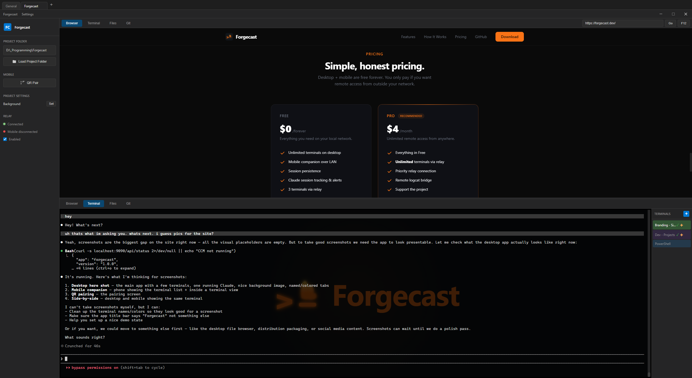
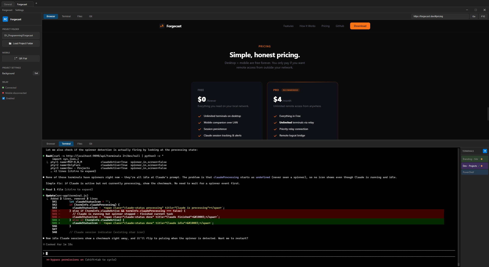
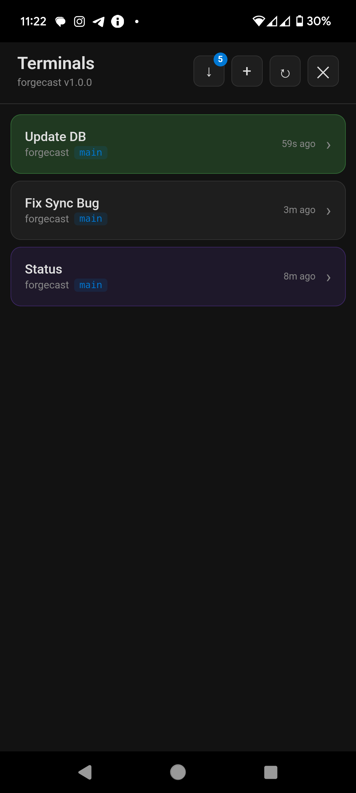
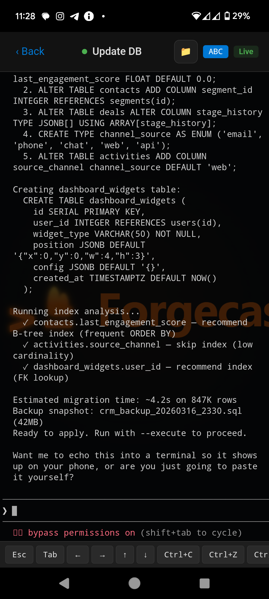

Your terminals,
everywhere.
Manage your terminals on desktop. Monitor them from your phone. Know when Claude finishes — without touching your keyboard.
Free forever. No account required.

Features
Everything a terminal manager should be.
And a few things no one else thought to build.
Mobile Companion
Open your phone, see your terminals. Tap to type. No SSH, no port forwarding. Pair with a QR code in 2 seconds.
Claude Session Alerts
Your phone buzzes when Claude finishes a task. Walk away from your desk without wondering “is it done yet?”
Session Persistence
Close the app, reboot, update — your terminals come back exactly where you left them. Scrollback, CWD, Claude sessions, everything.
Access From Anywhere
On your home WiFi? Direct connection. Out and about? The relay server bridges desktop and mobile with zero config.
Remote Logcat Bridge
Developing a mobile app? Stream Android logcat from any app on your phone back to your terminal. Debug remotely via curl.
Make It Yours
Named terminals, custom colors, background images. Each terminal is yours to organize and personalize however you want.
How It Works
Desktop power. Mobile freedom.
Forgecast runs on your desktop and mirrors everything to your phone.
Your desktop runs the show.
Forgecast manages all your terminal sessions — PTYs, scrollback, shell integration. It’s your terminal manager with Claude session tracking, git context detection, and auto-resume built in.
- Multiple terminals with tabs and panes
- Full session persistence across restarts
- Shell integration (PowerShell, Bash, Zsh)



Your phone keeps you connected.
The mobile companion pairs in 2 seconds via QR code. See every terminal, scroll through output, type commands. Push notifications when Claude finishes. Works on LAN or remotely via relay.
- QR code pairing — no IP addresses
- Real-time terminal mirroring
- Push notifications for Claude sessions
Early Users
What developers are saying.
“I can finally walk away from my desk and know exactly when Claude is done. The mobile companion is the feature I didn’t know I needed.”
“Session persistence alone is worth it. Add mobile access on top and it’s a no-brainer. Replaced my whole tmux + SSH setup.”
“The logcat bridge is genius. I debug my Android app from a Claude terminal. No USB cable, no Android Studio.”
Pricing
Simple, honest pricing.
Desktop + mobile are free forever. You only pay if you want remote access from outside your network.
Everything you need on your local network.
- Unlimited terminals on desktop
- Mobile companion over LAN
- Session persistence
- Claude session tracking & alerts
- 3 terminals via relay
Unlimited remote access from anywhere.
- Everything in Free
- Unlimited terminals via relay
- Priority relay connection
- Remote logcat bridge
- Support the project
LAN mode is always free and unlimited. Relay is what costs us server time — that’s what Pro covers.
Ready to try Forgecast?
Free, open source, no account required. Just download and go.
Download for WindowsWindows 10+ · Mobile companion for Android